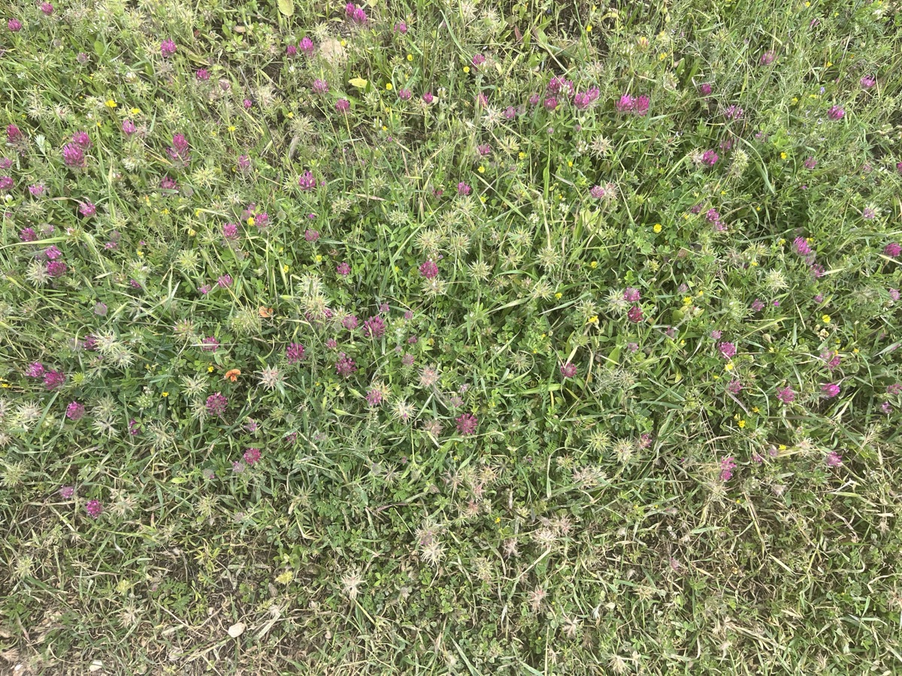
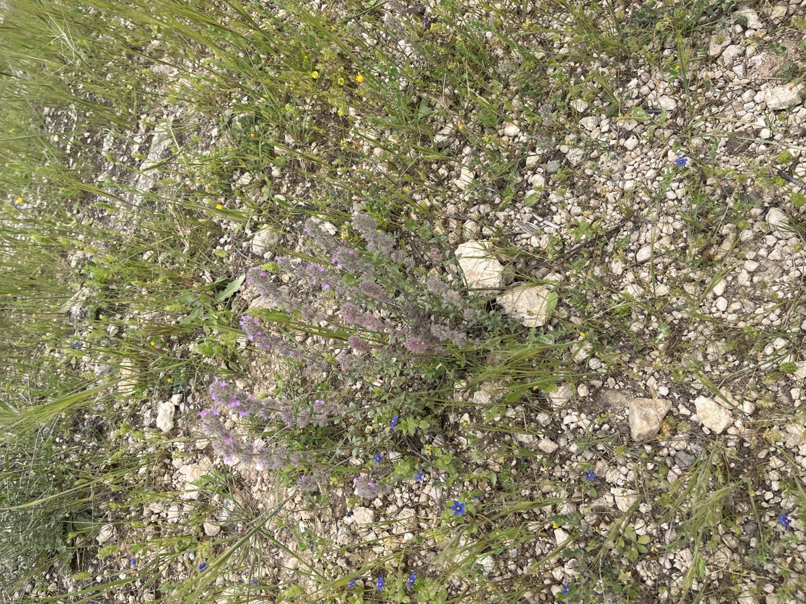
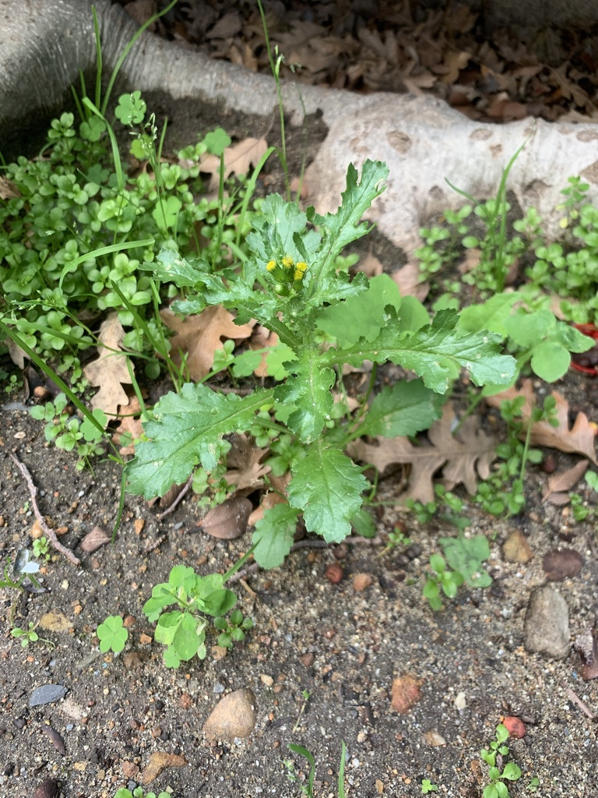
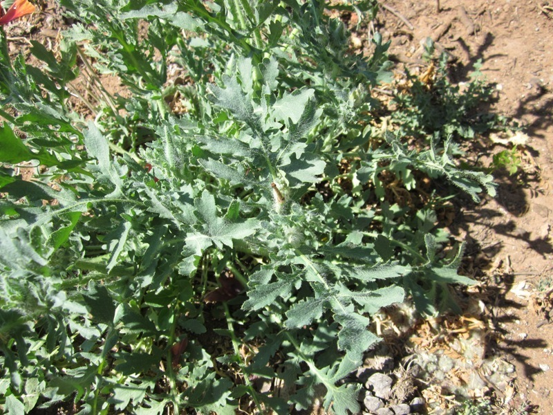
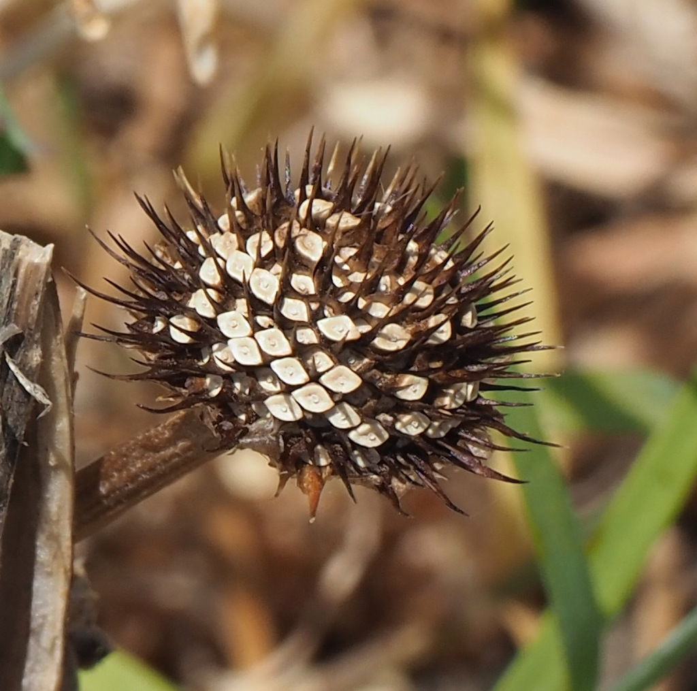

Side-by-side review of changed question images. The old quiz image is on the left, the replacement is in the middle, and the info image is on the right.
Echium judaeum#17
שרביטן משונן / Judean Viper's Bugloss
flowers_walks.json
Before Question

photos/IMG_8620.jpg
After Question

photos/inat_echium_judaeum_q_613974370.jpg
Info Image

https://inaturalist-open-data.s3.amazonaws.com/photos/287344473/medium.jpeg
השרביטן המשונן נפוץ בעיקר באזור הרי יהודה והשומרון. הוא פורח בחודשי האביב, בדרך כלל בין מרץ למאי, עם פרחים סגולים בולטים.
Securigera varia#19
ורבנה סגולה / Purple Crown Vetch
flowers_walks.json
Before Question

photos/IMG_8622.jpg
After Question

photos/inat_securigera_varia_q_48311321.jpg
Info Image

https://inaturalist-open-data.s3.amazonaws.com/photos/34301/medium.jpg
ורבנה סגולה היא צמח רב שנתי עם פרחים סגולים הפורחים באביב ובקיץ. היא גדלה באזורים פתוחים וקשה למצוא אותה בשדות ובמרעה.
Dittrichia viscosa#20
שינן רפואי / False Yellowhead
flowers_walks.json
Before Question

photos/IMG_8624.jpg
After Question

photos/inat_dittrichia_viscosa_q_167733412.jpg
Info Image

https://inaturalist-open-data.s3.amazonaws.com/photos/52679113/medium.jpg
שינן רפואי נפוץ בעיקר בבתי גידול קרקעות כבדה ומצדי דרכים. הוא פורח בסתיו ומוכר בזכות פריחה צהובה בולטת.
Thymus capitatus#26
קורנית מקורקפת / Common Thyme
flowers_walks.json
Before Question

photos/IMG_C79CF61D-11D9-4389-BCC8-4576B7226472.jpeg
After Question

photos/inat_thymus_capitatus_q_137878510.jpg
Info Image

https://static.inaturalist.org/photos/410371579/medium.jpeg
הקורנית המקורקפת היא שיח נמוך הנפוץ באזורי החורש והבתה של הים התיכון. פורחת באביב ובקיץ בפרחים סגולים צפופים.
Origanum syriacum#12
אזוב מצוי / Wild Marjoram
flowers_top30.json
Before Question

photos_tiuli/inat_origanum_syriacum.jpg
After Question

photos_tiuli/inat_origanum_syriacum_q_211485139.jpeg
Info Image

https://inaturalist-open-data.s3.amazonaws.com/photos/211484931/large.jpeg
אזוב מצוי (Origanum syriacum) צומח באזורים יבשים ובולטים בארץ ישראל, בעיקר באזורים הררים. זמן הפריחה שלו הוא בין החודשים יולי לספטמבר, והוא ידוע בשימושו המסורתי בתיבול מאכלים ובמרפא.
Ephedra foeminea#7
שרביטן מצוי / Leafless Ephedra
flowers2.json
Before Question

photos_tiuli/inat_ephedra_foeminea.jpg
After Question

photos_tiuli/inat_ephedra_foeminea_q_176950262.jpeg
Info Image

https://inaturalist-open-data.s3.amazonaws.com/photos/381053965/large.jpeg
שרביטן מצוי גדל באזורים צחיחים ויבשים, בעיקר במדבריות של ישראל. עונת הפריחה שלו היא במהלך האביב, ובעל יכולת לשלוט בהוצאות המים שלו, מה שמאפשר לו לשרוד בתנאים קשים.
Iris mesopotamica#14
אירוס ארם-נהריים / Mesopotamian Iris
flowers2.json
Before Question

photos_tiuli/inat_iris_mesopotamica.jpeg
After Question

photos_tiuli/inat_iris_mesopotamica_q_188716239.jpeg
Info Image

https://inaturalist-open-data.s3.amazonaws.com/photos/120992180/large.jpg
אירוס ארם-נהריים (Iris mesopotamica) צומח באזורי מסופוטמיה, בעיקר ליד מים ועדי נהרות. הוא פורח בעונה האביבית, ונחשב לאירוס נדיר ומיוחד בשל צבעיו היפים והייחודיים.
Parietaria judaica#31
כותלית יהודה / Wall Pellitory
flowers2.json
Before Question

photos_tiuli/inat_parietaria_judaica.jpeg
After Question

photos_tiuli/inat_parietaria_judaica_q_16296299.jpeg
Info Image

https://inaturalist-open-data.s3.amazonaws.com/photos/443913720/large.jpeg
כותלית יהודה, הפורחת בעונת האביב והקיץ, מצויה לרוב באזורים עירוניים ובסביבות רטובות כמו חופי נהרות. פרט מעניין הוא שהעלים שלה משמשים לעיתים כתרופה מסורתית לטיפול במחלות עור.
Raphanus raphanistrum#42
צנון מצוי / Wild Radish
flowers2.json
Before Question

photos_tiuli/inat_raphanus_raphanistrum.jpg
After Question

photos_tiuli/inat_raphanus_raphanistrum_q_189962313.jpeg
Info Image

https://inaturalist-open-data.s3.amazonaws.com/photos/129644938/large.jpeg
הצנון המצוי (Raphanus raphanistrum) נפוץ באירופה ובאזורים שונים בארץ ישראל, בעיקר בשדות פתוחים ובאזורים חקלאיים. הוא פורח באביב, בין החודשים מרץ למאי, ועובדה מעניינת עליו היא שהעלים והזרעים שלו אכילים ומשמשים לעיתים בתבשילים שונים.
Satureja thymbra#43
צתרה ורודה / Savoury of Crete
flowers2.json
Before Question

photos_tiuli/inat_satureja_thymbra.jpeg
After Question

photos_tiuli/inat_satureja_thymbra_q_502867960.jpeg
Info Image

https://inaturalist-open-data.s3.amazonaws.com/photos/15378528/large.jpg
הצתרה ורודה (Satureja thymbra) מצויה בעיקר באזורי ההרים והחופים של קריט, בעיקר באדמות סלעיות. היא פורחת בעיקר בקיץ, ומהווה מקור חשוב למאכל וריח נעים, וכן חלק מהקולינריה המקומית.
Myrtus communis#46
הדס מצוי / Common Myrtle
flowers2.json
Before Question

photos_tiuli/inat_myrtus_communis.jpg
After Question

photos_tiuli/inat_myrtus_communis_q_140221354.jpg
Info Image

https://inaturalist-open-data.s3.amazonaws.com/photos/97377151/large.jpeg
הדס מצוי גדל בעיקר באזורים ים-תיכוניים ויכול להימצא באדמות סלעיות או לחות. תקופת הפריחה שלו היא באביב, והוא ידוע גם בשימושיו המסורתיים בחג הסוכות.
Portulaca oleracea#47
רגלת הגינה / Garden Purslane
flowers2.json
Before Question

photos_tiuli/inat_portulaca_oleracea.jpg
After Question

photos_tiuli/inat_portulaca_oleracea_q_423510558.jpeg
Info Image

https://inaturalist-open-data.s3.amazonaws.com/photos/350307508/large.jpg
רגלת הגינה היא צמח חד-שנתי הנפוץ באדמות לחות ובגינות. היא פורחת בעיקר בקיץ, ויש לה עלים עסיסיים ופרחים צבעוניים המושכים חרקים. מעניין שהצמח נחשב למזון בריא ומכיל חומרים נוגדי חמצון.
Silene vulgaris#59
ציפורנית נפוחה / White Bladder Campion
flowers2.json
Before Question

photos_tiuli/inat_silene_vulgaris.jpg
After Question

photos_tiuli/inat_silene_vulgaris_q_150439422.jpeg
Info Image

https://inaturalist-open-data.s3.amazonaws.com/photos/591235970/large.jpg
הציפורנית הנפוחה פורחת בעיקר באביב ובקיץ וגדלה באזורי אדמה פתוחה ובקרקעות קלות. תכונה מעניינת שלה היא שהעליונים שלה יכולים להיות משמשים כמזון לאנשים ברבים מהאזורים שבהם היא צומחת.
Tragopogon coelesyriacus#60
זקן-תיש ארוך / Long Goat's-beard
flowers2.json
Before Question

photos_tiuli/inat_tragopogon_coelesyriacus.jpeg
After Question

photos_tiuli/inat_tragopogon_coelesyriacus_q_185650352.jpg
Info Image

https://static.inaturalist.org/photos/131237044/large.jpg
זקן-תיש ארוך (Tragopogon coelesyriacus) גדל בעיקר באדמות חקלאיות ובאזורים פתוחים ברחבי הארץ. הוא פורח בעונת האביב, ומעניין לדעת שפרחיו נפתחים בבוקר וסוגרים בשעות אחר הצהריים.
Parkinsonia aculeata#66
פרקינסוניה שיכנית / Pickly Thorn
flowers2.json
Before Question

photos_tiuli/inat_parkinsonia_aculeata.jpg
After Question

photos_tiuli/inat_parkinsonia_aculeata_q_528514637.jpg
Info Image

https://inaturalist-open-data.s3.amazonaws.com/photos/482446345/large.jpg
הפרקינסוניה שיכנית נפוצה בעיקר באפריקה ובאזורים טרופיים נוספים, והיא פורחת בעונת הקיץ. מעניין שהיא שייכת למשפחת השקדיים, ויש לה יכולת לשגשג באדמות צחיחות.
Cyperus fuscus#69
גומא חום / Brown Rue
flowers2.json
Before Question

photos_tiuli/inat_cyperus_fuscus.jpeg
After Question

photos_tiuli/inat_cyperus_fuscus_q_318653665.jpeg
Info Image

https://static.inaturalist.org/photos/324558994/large.jpg
הגומא החום גדל בעיקר בביצות, שולי נהרות ובאזורים לחים נוספים. הוא מפרה את עונת הפריחה שלו במהלך הקיץ, ובנוסף, הוא ידוע בתכונתו לשמש כמערכת סינון טבעית למקורות מים.
Amaranthus viridis#82
ירבוז מצוי / Least Amaranth
flowers2.json
Before Question

photos_tiuli/inat_amaranthus_viridis.jpg
After Question

photos_tiuli/inat_amaranthus_viridis_q_432065169.jpeg
Info Image

https://inaturalist-open-data.s3.amazonaws.com/photos/433797251/large.jpeg
הירבוז המצוי (Amaranthus viridis) צומח באדמות לחות ובסביבת גידולים חקלאיים. עונת הפריחה שלו היא באביב ובקיץ, והעובדה המעניינת היא שהוא נחשב לצמח מאכל במקביל לשימושו ככל צמח בר.
Punica granatum#83
רימון מצוי / Pomegranate
flowers2.json
Before Question

photos_tiuli/inat_punica_granatum.jpg
After Question

photos_tiuli/inat_punica_granatum_q_75724489.jpeg
Info Image

https://inaturalist-open-data.s3.amazonaws.com/photos/431856500/large.jpeg
הרימון (Punica granatum) נפוץ באזורים חמים כמו המזרח התיכון ודרום אסיה. העונה לפריחת הרימון היא מאי עד יולי, והוא ידוע בפרי האדום והעסיסי שלו, שידוע כבעל יתרונות בריאותיים רבים.
Pistacia lentiscus#86
אלת המסטיק / Lentisk
flowers2.json
Before Question

photos_tiuli/inat_pistacia_lentiscus.jpg
After Question

photos_tiuli/inat_pistacia_lentiscus_q_122945122.jpeg
Info Image

https://static.inaturalist.org/photos/404033379/large.jpeg
אלת המסטיק גדלה בעיקר באזורים ים-תיכוניים, לרוב באדמות שכנות לחופים או במדרונות הרים. הפריחה מתרחשת באביב, ומעניין שהמסטיק ששייך עץ זה שימש כתוספת במאכלים ובתרופות מסורתיות במשך מאות שנים.
Datura stramonium#95
דטורה זקופת-פרי / Common Thornapple
flowers2.json
Before Question

photos_tiuli/inat_datura_stramonium.jpg
After Question

photos_tiuli/inat_datura_stramonium_q_618377.jpg
Info Image

https://inaturalist-open-data.s3.amazonaws.com/photos/245461487/large.jpg
הדטורה זקופת-פרי נפוצה בכל רחבי ישראל, במיוחד באדמות לחות ובאזורים חמים. היא פורחת בעונות האביב והקיץ, והיא ידועה בזכות הפרחים הגדולים והבולטים שלה, שאותם ניתן לראות בלילה כשהם פורחים ומפליאים בריחם.
Ricinus communis#98
קיקיון מצוי / castor-Oil Plant
flowers2.json
Before Question

photos_tiuli/inat_ricinus_communis.jpeg
After Question

photos_tiuli/inat_ricinus_communis_q_24509324.jpeg
Info Image

https://inaturalist-open-data.s3.amazonaws.com/photos/370275219/large.jpg
הקיקיון המצוי נפוץ באפריקה ובחלקים טרופיים נוספים בעולם, והוא גדל בעיקר באדמות עשירות ודלילות במים. פריחתו מתרחשת בעונת הקיץ, והוא ידוע בסגולותיו כצמח רעיל, במיוחד בשמן המופק מזרעיו.
Smilax aspera#117
קיסוסית קוצנית / Rough Bindweed
flowers2.json
Before Question

photos_tiuli/inat_smilax_aspera.jpg
After Question

photos_tiuli/inat_smilax_aspera_q_165665977.jpg
Info Image

https://inaturalist-open-data.s3.amazonaws.com/photos/165665959/large.jpg
הקיסוסית הקוצנית נמצאת בעיקר באזורים טרופיים וסובטרופיים, באדמות לחות ובצידי דרכים. היא פורחת בסביבות האביב והקיץ, ובין Fakten המיוחדים שלה היא היכולת שלה לטפס על עצים וצמחים אחרים בעזרת קוצים יחודיים שלה.
Origanum syriacum#121
אזוב מצוי / Wild Marjoram
flowers2.json
Before Question
photos_tiuli/inat_origanum_syriacum.jpg
After Question
photos_tiuli/inat_origanum_syriacum_q_211485139.jpeg
Info Image
https://inaturalist-open-data.s3.amazonaws.com/photos/211484931/large.jpeg
אזוב מצוי (Origanum syriacum) צומח באזורים יבשים ובולטים בארץ ישראל, בעיקר באזורים הררים. זמן הפריחה שלו הוא בין החודשים יולי לספטמבר, והוא ידוע בשימושו המסורתי בתיבול מאכלים ובמרפא.
Withania somnifera#143
ויתניה משכרת / Common Winter-cherry
flowers2.json
Before Question

photos_tiuli/inat_withania_somnifera.jpg
After Question

photos_tiuli/inat_withania_somnifera_q_42912282.jpeg
Info Image

https://inaturalist-open-data.s3.amazonaws.com/photos/522919214/large.jpg
ויתניה משכרת נפוצה באקלימים טרופיים ומדבריים, וצומחת בעיקר באפריל עד יולי. עובדה מעניינת היא שהיא ידועה כמסייעת בשיפור הבריאות ומערכת החיסון, ולכן משתמשים בה ברפואה המסורתית.
Aster subulatus#158
אסתר מרצעני / Common Starwort
flowers2.json
Before Question

photos_tiuli/inat_aster_subulatus.jpg
After Question

photos_tiuli/inat_aster_subulatus_q_233576026.jpg
Info Image

https://inaturalist-open-data.s3.amazonaws.com/photos/188803381/large.jpeg
האסתר מרצעני גדלה בעיקר באזורים לחים כמו מדשאות, שולי יערות ונחלים. היא פורחת בעונת האביב והקיץ, ומעניין לדעת שהיא מושכת מאביקים רבים כמו דבורים ופרפרים בזכות צבעי הפרחים הבהירים שלה.
Schoenoplectus lacustris#185
אגמון האגם / Lake Bulrush
flowers2.json
Before Question

photos_tiuli/inat_schoenoplectus_lacustris.jpeg
After Question

photos_tiuli/inat_schoenoplectus_lacustris_q_262569133.jpeg
Info Image

https://inaturalist-open-data.s3.amazonaws.com/photos/341177078/large.jpeg
אגמון האגם (Schoenoplectus lacustris) מצוי בעיקר בחופי אגמים וביצות מתחת לפני המים. הוא פורח בין סוף האביב לתחילת הקיץ, ועניין מעניין הוא שזרעים שלו יכולים לשרוד במצב שינה במשך שנים רבות באדמה.
Lathyrus aphaca#187
טופח מצוי / Yellow Vetchling
flowers2.json
Before Question

photos_tiuli/inat_lathyrus_aphaca.jpg
After Question

photos_tiuli/inat_lathyrus_aphaca_q_208562598.jpeg
Info Image

https://inaturalist-open-data.s3.amazonaws.com/photos/208562623/large.jpeg
הטופח המצוי גדל באזורים פתוחים כגון שדות, חורשות ובתים קיץ. הוא פורח בין חודשים אפריל ליולי, וידוע בזכות קסם הפריחה שלו שמושך חרקים מאביקים.
Ecballium elaterium#196
ירוקת-חמור מצויה / Squirting Cucumber
flowers2.json
Before Question

photos_tiuli/inat_ecballium_elaterium.jpg
After Question

photos_tiuli/inat_ecballium_elaterium_q_204708982.jpg
Info Image

https://inaturalist-open-data.s3.amazonaws.com/photos/204708925/large.jpg
הירוקת-חמור מצויה נפוצה באזורי חופים ושטחים פתוחים במדינת ישראל. היא פורחת בעיקר בקיץ, ויש לה מכניזם ייחודי שבו בעת בגרות הזרעים, הם נלכדים בתוך הפרח והשיח משחרר אותם בלחץ משמעותי.
Lactuca serriola#204
חסת המצפן / Prickly Lettuce
flowers2.json
Before Question

photos_tiuli/inat_lactuca_serriola.jpeg
After Question

photos_tiuli/inat_lactuca_serriola_q_91403681.jpg
Info Image

https://inaturalist-open-data.s3.amazonaws.com/photos/41168983/large.jpeg
חסת המצפן (Lactuca serriola) נפוצה באזורים פתוחים כמו שדות ובצידי דרכים. היא פורחת בדרך כלל בקיץ והפרחים שלה יכולים למשוך מספר סוגים של חרקים. עובדה מעניינת היא שהצמח משמש גם בתרופות tradiשוי רחב.
Umbilicus intermedius#213
טבורית נטויה / Common Pennywort
flowers2.json
Before Question

photos_tiuli/inat_umbilicus_intermedius.jpg
After Question

photos_tiuli/inat_umbilicus_intermedius_q_120618452.jpeg
Info Image

https://inaturalist-open-data.s3.amazonaws.com/photos/480690836/large.jpg
הטבורית נטויה גדלה בעיקר באזורים לחים ובקירות סלעיים, ומלבלבת בעונת האביב. עובדה מעניינת על הצמח היא שהעלים שלו עשויים לשמש כקישוט במנות, בשל צורתם הייחודית.
Medicago polymorpha#225
אספסת מצויה / Bur Clover
flowers2.json
Before Question

photos_tiuli/inat_medicago_polymorpha.jpg
After Question

photos_tiuli/inat_medicago_polymorpha_q_34981915.jpeg
Info Image

https://inaturalist-open-data.s3.amazonaws.com/photos/604837845/large.jpg
אספסת מצויה, הנפוצה באזורים חמים ויבשים, פורחת בעיקר בין האביב לקיץ. מעניין שהיא ידועה ביכולת שלה לגדול באדמות עניות ובתנאים לא אופטימליים.
Amaranthus retroflexus#236
ירבוז מופשל / Amoranth Foxtail
flowers2.json
Before Question

photos_tiuli/inat_amaranthus_retroflexus.jpeg
After Question

photos_tiuli/inat_amaranthus_retroflexus_q_305980112.jpeg
Info Image

https://static.inaturalist.org/photos/615045328/large.jpg
הירבוז המופשל (Amaranthus retroflexus) נפוץ בשדות, גינות ובאזורים טרופיים. הוא פורח בסביבות הקיץ וידוע ביכולתו לעבור התאמה לסביבות שונות, מה שעושה אותו לעמיד בפני תנאים קשים.
Galium aparine#239
דבקה זיפנית / Goose-Grass
flowers2.json
Before Question

photos_tiuli/inat_galium_aparine.jpg
After Question

photos_tiuli/inat_galium_aparine_q_182214781.jpeg
Info Image

https://inaturalist-open-data.s3.amazonaws.com/photos/634325931/large.jpg
דבקה זיפנית גדלה באדמות לחות ובקרקעות עשירות, ולעיתים אף באזורים עם צל. היא פורחת בין מרץ ליולי, והצמח ידוע בזכות היכולת שלו להידבק בעור ובבדים בעזרת קוטיקולה דבקית.
Mentha longifolia#240
נענה משובלת / Horse Mint
flowers2.json
Before Question

photos_tiuli/inat_mentha_longifolia.jpeg
After Question

photos_tiuli/inat_mentha_longifolia_q_150152874.jpeg
Info Image

https://inaturalist-open-data.s3.amazonaws.com/photos/36946679/large.jpeg
נענה משובלת גדלה בעיקר בצדי נחלים ובנקודות לחות, ואופיינית לאזורי טמפ'. היא פורחת בקיץ, בעיקר ביולי ואוגוסט. עובדה מעניינת היא כי לצמח תרכובות טעם וריח חזקות המשתמשות ברפואה המסורתית.
Nicotiana glauca#263
טבק השיח / Tobacco Tree
flowers2.json
Before Question

photos_tiuli/inat_nicotiana_glauca.jpeg
After Question

photos_tiuli/inat_nicotiana_glauca_q_87821113.jpg
Info Image

https://inaturalist-open-data.s3.amazonaws.com/photos/59900345/large.jpeg
טבק השיח (Nicotiana glauca) נפוץ באזורים טרופיים וסובטרופיים, והוא מצוי בעיקר באמריקה הדרומית ובאזורים שונים בישראל. הוא פורח בעונת הקיץ, ולעיתים רחוקות ניתן למצוא אותו פורח גם בחורף; אחד העובדות המעניינות עליו הוא שהעלים שלו מכילים אלקלואידים שיכולים לגרום לתופעות לוואי אם נצרכים בכמות מרובה.
Cyperus rotundus#274
גומא הפקעים / Coco Nut-grass
flowers2.json
Before Question

photos_tiuli/inat_cyperus_rotundus.jpeg
After Question

photos_tiuli/inat_cyperus_rotundus_q_561131183.jpg
Info Image

https://inaturalist-open-data.s3.amazonaws.com/photos/69628647/large.jpg
גומא הפקעים גדל בעיקר באדמות לחות וחרבות, והוא נפוץ באפריקה, אסיה ואירופה. פריחת הגומא מתרחשת בדרך כלל בחודשי הקיץ, והוא ידוע בזכות יכולתו לגדול גם בתנאי קרקע קשים.
Mercurialis annua#275
מרקולית מצויה / Annual Mercury
flowers2.json
Before Question

photos_tiuli/inat_mercurialis_annua.jpeg
After Question

photos_tiuli/inat_mercurialis_annua_q_463819927.jpg
Info Image

https://inaturalist-open-data.s3.amazonaws.com/photos/225689247/large.jpeg
מרקולית מצויה נפוצה באזורים לחים ורטובים, כמו חופי נהרות ויישובים חקלאיים. היא פורחת באביב, וכ fact נוסף מעניין הוא שפרחיה יודעים למשוך חרקים שונים, אך הם אינם משתמשים בצוף.
Bidens pilosa#281
דו-שן שעיר / Spanish Needle
flowers2.json
Before Question

photos_tiuli/inat_bidens_pilosa.jpg
After Question

photos_tiuli/inat_bidens_pilosa_q_388160076.jpg
Info Image

https://inaturalist-open-data.s3.amazonaws.com/photos/341467861/large.jpg
הדו-שן השעיר (Bidens pilosa) נפוץ באפריקה, אסיה ודרום אמריקה וגדל במגוון בתי גידול כגון אדמות לחות, שדות ובתי גידול עירוניים. הפריחה מתרחשת בעיקר בעונות החמות והקיץ, ומעניין לדעת שהצמח ידוע גם בשימושיו המסורתיים ברפואה העממית.
Conyza bonariensis#282
קייצת מסולסלת / Horseweed
flowers2.json
Before Question

photos_tiuli/inat_conyza_bonariensis.jpeg
After Question

photos_tiuli/inat_conyza_bonariensis_q_149765940.jpg
Info Image

https://inaturalist-open-data.s3.amazonaws.com/photos/62026862/large.jpeg
הקייצת המסולסלת נפוצה באיזורים פתוחים כמו שדות ושוליים של דרכים. היא פורחת בעונת הקיץ, ולמרות שהיא נחשבת לעשב מזיק, פרחיה הקטנים והפזורים נראים כיפה מעוטרת בנעימות.
Ephedra aphylla#285
שרביטן ריסני / Cilliate Ephedra
flowers2.json
Before Question

photos_tiuli/inat_ephedra_aphylla.jpeg
After Question

photos_tiuli/inat_ephedra_aphylla_q_375280830.jpg
Info Image

https://inaturalist-open-data.s3.amazonaws.com/photos/288086091/large.jpeg
השרביטן ריסני נפוץ במדבריות ובאזורים יובשניים, והוא פורח בעונות החמות של השנה, מאפריל עד ספטמבר. פרט מעניין לגבי צמח זה הוא שהעלים שלו אינם מורגשים כמעט, והגבעולים הם אלו שנראים בולטים ואחראים לתהליך הפוטוסינתזה.
Alhagi grae#288
הגה מצויה / Camel Thorn
flowers2.json
Before Question

photos_tiuli/inat_alhagi_grae.jpeg
After Question

photos_tiuli/inat_alhagi_grae_q_143151778.jpg
Info Image

https://inaturalist-open-data.s3.amazonaws.com/photos/50704016/large.jpeg
הגה מצויה (Alhagi grae) נפוצה בעיקר באזורים צחיחים ומדבריים בארץ ישראל. היא פורחת בעונות האביב והקיץ, ופיצ'ר מעניין שלה הוא השורשים העמוקים שלה המאפשרים לה לשרוד בתנאים קשים ולמצוא מים במעמקי האדמה.
Eclipta prostrata#291
אל-ציצית לבנה / White Eclipta
flowers2.json
Before Question

photos_tiuli/inat_eclipta_prostrata.jpg
After Question

photos_tiuli/inat_eclipta_prostrata_q_60225973.jpeg
Info Image

https://inaturalist-open-data.s3.amazonaws.com/photos/15614888/large.jpg
האל-ציצית הלבנה גדלה בעיקר באזורים לחים ובקרקעות בוציות. פריחתה מתרחשת בדרך כלל בעונת הקיץ, ומעניין לדעת שהיא משמשת ברפואה המסורתית לטיפול בבעיות עור.
Juncus acutus#292
סמר חד / Mat Rush
flowers2.json
Before Question

photos_tiuli/inat_juncus_acutus.jpg
After Question

photos_tiuli/inat_juncus_acutus_q_163081991.jpeg
Info Image

https://inaturalist-open-data.s3.amazonaws.com/photos/189589781/large.jpg
סמר חד (Juncus acutus) גדל בעיקר באזורים לחים כמו חופי הים ואיזורי לגדות נהרות ומשקים. עונת הפריחה שלו היא בדרך כלל באביב, והוא ידוע ביכולת שלו לספוג מלחים מהסביבה.
Biscutella didyma#293
מצלתיים מצויות / Buckler Mustard
flowers2.json
Before Question

photos_tiuli/inat_biscutella_didyma.jpeg
After Question

photos_tiuli/inat_biscutella_didyma_q_109932921.jpeg
Info Image

https://inaturalist-open-data.s3.amazonaws.com/photos/109932919/large.jpeg
מצלתיים מצויות (Biscutella didyma) נפוצה בעיקר באזורים לחים עם קרקע פורייה, כמו שדות ושטחים פתוחים. היא פורחת באביב ומביאה צבעים יפים, ופועל יוצא מעניין הוא שהיא משמשת כמזון לדבורים ולחרקים אחרים.
Rhagadiolus stellatus#299
כוכבן מצוי / Star Hawkbit
flowers2.json
Before Question

photos_tiuli/inat_rhagadiolus_stellatus.jpeg
After Question

photos_tiuli/inat_rhagadiolus_stellatus_q_620691438.jpg
Info Image

https://inaturalist-open-data.s3.amazonaws.com/photos/186025783/large.jpeg
הכוכבן המצוי גדל באדמות לחות ומרבדים ירוקים, בעיקר באירופה ובמערב אסיה. פריחתו מתרחשת בעיקר בעונת האביב, והוא ידוע בזכות פרחיו הקטנים והכוכביים בצבעים המגוונים שלו.
Silene behen#314
ציפורנית כרסנית / Bladder Campion
flowers2.json
Before Question

photos_tiuli/inat_silene_behen.jpg
After Question

photos_tiuli/inat_silene_behen_q_150439422.jpeg
Info Image
https://inaturalist-open-data.s3.amazonaws.com/photos/591235970/large.jpg
הציפורנית כרסנית (Silene behen) נפוצה באזורים עם קרקע לחה כמו שטחי מרעה, צידי דרכים ושטחי טבע. היא פורחת בעיקר בחודשים אפריל עד יוני, ועובדת השורש שלה מאפשרת לה לשרוד בתנאים קשים, דבר שמוביל לפופולריות שלה באזורים שונים.
Trifolium campestre#319
תלתן חקלאי / Hop Clover
flowers2.json
Before Question

photos_tiuli/inat_trifolium_campestre.jpeg
After Question

photos_tiuli/inat_trifolium_campestre_q_487561398.jpg
Info Image

https://static.inaturalist.org/photos/162247245/large.jpeg
התלתן החקלאי גדל בעיקר בשדות פתוחים ודשא, בעיקר באירופה ובמערב אסיה. הפריחה מתרחשת בעונות האביב והקיץ, ועובדה מעניינת היא שהתלתן הזה משמש כצמח מזון חשוב לבעלי חיים.
Salsola kali#322
מלחית אשלגנית / Prickly Saltwort
flowers2.json
Before Question

photos_tiuli/inat_salsola_kali.jpeg
After Question

photos_tiuli/inat_salsola_kali_q_158470305.jpg
Info Image

https://inaturalist-open-data.s3.amazonaws.com/photos/114629193/large.jpeg
מלחית אשלגנית היא צמח הגדל בדרך כלל באזורי חוף, במיוחד באדמות מלוחות. היא פורחת בעונת הקיץ, וכInteresting fact: מספר מאכלי ים ויבוליי חקלאות משמשים כאוכל לבעלי חיים שמסתמכים על הצמח הזה.
Amaranthus blitum#324
ירבוז מבריק / Wild Amaranth
flowers2.json
Before Question

photos_tiuli/inat_amaranthus_blitum.jpeg
After Question

photos_tiuli/inat_amaranthus_blitum_q_54946213.jpeg
Info Image

https://static.inaturalist.org/photos/592857805/large.jpg
ירבוז מבריק גדל בעיקר באזורים חמים ולחים, בדרך כלל בשדות ובגנים. הוא פורח בין האביב לסתיו, ולעיתים משמש כצמח מאכל או לתיבול בזכות עליו הנעימים.
Citrus sinensis#327
תפוז סיני
flowers2.json
Before Question

photos_tiuli/inat_citrus_sinensis.jpeg
After Question

photos_tiuli/inat_citrus_sinensis_q_105995328.jpeg
Info Image

https://inaturalist-open-data.s3.amazonaws.com/photos/257383094/large.jpeg
התפוז הסיני, שנקרא גם תפוז מתוק, גדל בעיקר באקלים חם כמו אזורים טרופיים וסובטרופיים. הוא פורח בעיקר באביב ומסמח אותנו בפרי החמוץ-מתוק שלו, אשר מכיל ויטמין C בשפע.
Asphodelus fistulosus#335
עירית נבובה / Onion-leaved Asphodel
flowers2.json
Before Question

photos_tiuli/inat_asphodelus_fistulosus.jpeg
After Question

photos_tiuli/inat_asphodelus_fistulosus_q_355710385.jpeg
Info Image

https://inaturalist-open-data.s3.amazonaws.com/photos/165934121/large.jpeg
העירית הנבובה (Asphodelus fistulosus) מצויה באזורי חקלאות ודשא באפריקה ובדרום אירופה. היא פורחת בעיקר באביב, וחלוקת הפרחים שלה כוללת צבעים לבנים-ורודים, ואילו עוברת חום-צהוב יציב בעונות הקיץ.
Sonchus oleraceus#340
מרור הגינות / Common Sow-thistle
flowers2.json
Before Question

photos_tiuli/inat_sonchus_oleraceus.jpg
After Question

photos_tiuli/inat_sonchus_oleraceus_q_131297526.jpg
Info Image

https://inaturalist-open-data.s3.amazonaws.com/photos/382098825/large.jpg
מרור הגינות גדל בדרך כלל באזורים יבשתיים כמו שדות, גינות ונמלות חלשות. פריחתו מתרחשת בעונות האביב והקיץ, והוא ידוע כבעל תכונות רפואיות מסורתיות.
Astragalus aleppicus#346
קדד פינברון / Aleppo Milk-Vetch
flowers2.json
Before Question

photos_tiuli/inat_astragalus_aleppicus.jpeg
After Question

photos_tiuli/inat_astragalus_aleppicus_q_570455499.jpg
Info Image

https://inaturalist-open-data.s3.amazonaws.com/photos/570455420/large.jpg
קדד פינברון הוא צמח רב שנתי שמפרה בצפון איפה שהקרקע היא יבשה ופוריה. עונת הפריחה שלו מתרחשת בחודשי האביב, והוא ידוע ברגישותו לרמות חומציות באדמה.
Glinus lotoides#358
אפרורית מצויה / Grey-weed
flowers2.json
Before Question

photos_tiuli/inat_glinus_lotoides.jpg
After Question

photos_tiuli/inat_glinus_lotoides_q_584342186.jpg
Info Image

https://inaturalist-open-data.s3.amazonaws.com/photos/169195701/large.jpg
אפרורית מצויה (Glinus lotoides) צומחת בעיקר באפריקה ובאזורים טרופיים נוספים, והיא נפוצה בעיקר באדמות לחות. פריחתה מתרחשת בעונות החמות, ואחד העובדות המעניינות עליה הוא שהצמח משמש לעיתים קרובות ברפואה המסורתית באפריקה.
Peucedanum junceum#360
אחישבת ענף / Sulphurwort
flowers2.json
Before Question

photos_tiuli/inat_peucedanum_junceum.jpeg
After Question

photos_tiuli/inat_peucedanum_junceum_q_183840164.jpg
Info Image

https://inaturalist-open-data.s3.amazonaws.com/photos/183839924/large.jpg
הסולפורוורט (אחישבת ענף) גדל באגן הים התיכון, בעיקר באזורים לחים כמו חופי ים ונהרות. הוא פורח בעונת הקיץ, וכשצורת הפרח שלו, המזכירה ציל פרח, נראית מפתיעה וייחודית.
Scrophularia xanthoglossa#364
לוענית מצויה / Yellow-scaled Figwort
flowers2.json
Before Question

photos_tiuli/inat_scrophularia_xanthoglossa.jpeg
After Question

photos_tiuli/inat_scrophularia_xanthoglossa_q_619228175.jpg
Info Image

https://inaturalist-open-data.s3.amazonaws.com/photos/118377476/large.jpeg
הלוענית המצויה (Scrophularia xanthoglossa) גדלה בעיקר באזורים לחים כמו אפיקי נחלים ושטחים פתוחים. היא פורחת בין הקיץ לאוגוסט, ולגבעוליה יש צבע צהוב בולט שמושך חרקים מאביקים.
Verbascum sinaiticum#365
בוצין סיני / Sinai Mullein
flowers2.json
Before Question

photos_tiuli/inat_verbascum_sinaiticum.jpeg
After Question

photos_tiuli/inat_verbascum_sinaiticum_q_499295637.jpg
Info Image

https://static.inaturalist.org/photos/169742980/large.jpg
הבוצין סיני (Verbascum sinaiticum) גדל בעיקר באיזורים הרריים ובמדבריות, ופורח בין חודשים אפריל ליולי. פרט מעניין עליו הוא שהשימושים הרפואיים שלו ידועים עוד מימי קדם.
Hymenocarpos circinnatus#375
כליינית מצויה / Disk Trefoil
flowers2.json
Before Question

photos_tiuli/inat_hymenocarpos_circinnatus.jpeg
After Question

photos_tiuli/inat_hymenocarpos_circinnatus_q_232759520.jpeg
Info Image

https://inaturalist-open-data.s3.amazonaws.com/photos/480774493/large.jpeg
הכליינית המצויה גדלה בעיקר באדמות חוליות ובאזורים פתוחים. היא פורחת בחודשים אפריל עד יולי, ועוברת תהליך של קיפול עלים כשיש מחסור במים, דבר המאפשר לה לשרוד בתנאים קשים.
Heliotropium supinum#379
עוקץ-עקרב שרוע / Trailing Heliotrope
flowers2.json
Before Question

photos_tiuli/inat_heliotropium_supinum.jpg
After Question

photos_tiuli/inat_heliotropium_supinum_q_111619958.jpeg
Info Image

https://inaturalist-open-data.s3.amazonaws.com/photos/635192915/large.jpg
העוקץ-עקרב שרוע גדל באזורים נמוכים וביצתיים ופורח בעיקר בעונת הקיץ. פרט מעניין הוא שהצמח נמשך לאור השמש ומסובב את פרחיו בהתאם למקורות האור.
Verbena officinalis#380
ורבנה רפואית / Common Vervain
flowers2.json
Before Question

photos_tiuli/inat_verbena_officinalis.jpeg
After Question

photos_tiuli/inat_verbena_officinalis_q_231185620.jpeg
Info Image

https://inaturalist-open-data.s3.amazonaws.com/photos/50247162/large.jpeg
הרבנה הרפואית גדלה בדרך כלל באזורים פתוחים, חקלאיים או בסביבות לחות. עונת הפריחה שלה היא בקיץ, והיא ידועה גם בשימושיה הרפואיים המסורתיים.
Pistia stratiotes#381
פיסטיה צפה
flowers2.json
Before Question

photos_tiuli/inat_pistia_stratiotes.jpeg
After Question

photos_tiuli/inat_pistia_stratiotes_q_105877369.jpeg
Info Image

https://inaturalist-open-data.s3.amazonaws.com/photos/39498249/large.jpeg
הפיסטיה הצפה נפוצה במקווי מים מתוקים כמו אגמים ונהרות. היא פורחת בעונה החמה, בדרך כלל בקיץ, ומעניין שכשהיא מתפשטת, היא יכולה ליצור שטחים גדולים ולמנוע את חדירת אור השמש למים, מה שמעכב את צמיחת הצמחים בתחתית.
Scorpiurus muricatus#383
זנב-עקרב שיכני / Prickly Scorpiontail
flowers2.json
Before Question

photos_tiuli/inat_scorpiurus_muricatus.jpeg
After Question

photos_tiuli/inat_scorpiurus_muricatus_q_576936376.jpg
Info Image

https://inaturalist-open-data.s3.amazonaws.com/photos/197449454/large.jpg
זןב-עקרב שיכני גדל בעיקר באזורים חמים ויבשים, כמו בצפון אפריקה ובמדינות המזרח התיכון. הוא פורח בעונת האביב, ובעל פרחים קטנים בצורת קרניים שמושכים חרקים לאופקה.
Echinops polyceras#385
קיפודן בלאנש / Blanche Globe-thistle
flowers2.json
Before Question

photos_tiuli/inat_echinops_polyceras.jpeg
After Question

photos_tiuli/inat_echinops_polyceras_q_472845169.jpeg
Info Image

https://static.inaturalist.org/photos/193196557/large.jpeg
הקיפודן בלאנש (Echinops polyceras) נפוץ באזורי צומח פתוחים כמו מדבריות ושטחים בעייתיים. הוא פורח בעונת הקיץ ומושך כמעט עשרות סוגים של דבורי דבש בשל הצוף המתוק שלו.
Osyris alba#395
שבטן לבן / Poet's Cassia
flowers2.json
Before Question

photos_tiuli/inat_osyris_alba.jpeg
After Question

photos_tiuli/inat_osyris_alba_q_278119268.jpeg
Info Image

https://inaturalist-open-data.s3.amazonaws.com/photos/487894536/large.jpeg
שבטן לבן (Osyris alba) משגשגת בעיקר באזורים לחים כמו ביצות וגדות נהרות. היא פורחת בעונות המעבר, בעיקר באביב, ומעניין לדעת שהעלים שלה משמשים לעיתים בטיפול רפואי מסורתי.
Chenopodium album#410
כף-אווז לבנה / White Goosefoot
flowers2.json
Before Question

photos_tiuli/inat_chenopodium_album.jpg
After Question

photos_tiuli/inat_chenopodium_album_q_30305747.jpeg
Info Image

https://inaturalist-open-data.s3.amazonaws.com/photos/15683639/large.jpg
כף-אווז לבנה גדלה לרוב בשדות, גינות ובסמוך למקווי מים, והיא פורחת בין האביב לקיץ. עובדה מעניינת היא שהעלים שלה משמשים כמזון בתרבויות רבות, ובחלק מהמקרים אף נחשבים למזון בריאותי.
Conyza canadensis#411
קייצת קנדית / Canadian Fleabane
flowers2.json
Before Question

photos_tiuli/inat_conyza_canadensis.jpg
After Question

photos_tiuli/inat_conyza_canadensis_q_154036394.jpeg
Info Image

https://inaturalist-open-data.s3.amazonaws.com/photos/332615495/large.jpg
הקייצת הקנדית פורחת בעיקר בקיץ ובסתיו, והיא נפוצה באזורים פתוחים כמו שדות, דרכים וסבכים. אחד מהמאפיינים המיוחדים שלה הוא היכולת להתרבות במהירות רבה, מה שמאפשר לה להתפשט באזורים חדשים.
Amaranthus palmeri#425
ירבוז פלמר / Careless Weed
flowers2.json
Before Question

photos_tiuli/inat_amaranthus_palmeri.jpg
After Question

photos_tiuli/inat_amaranthus_palmeri_q_314548991.jpg
Info Image

https://inaturalist-open-data.s3.amazonaws.com/photos/463135976/large.jpg
ירבוז פלמר הוא צמח חד שנתי הגדל בעיקר באזורים חמים ויבשים, כמו שדות ומטעים. הוא פורח בעיקר בקיץ, וצמחים אלו ידועים ביכולתם לגדול במהירות ולהתייחס לשינויים בסביבה, מה שמקנה להם יתרון תחרותי בקרב עשבים אחרים.
Arum hygrophilum#430
לוף ירוק / Green Arum
flowers2.json
Before Question

photos_tiuli/inat_arum_hygrophilum.jpg
After Question

photos_tiuli/inat_arum_hygrophilum_q_527035922.jpg
Info Image

https://inaturalist-open-data.s3.amazonaws.com/photos/183547670/large.jpeg
הלוף הירוק (Arum hygrophilum) פורח בעונת האביב במקווי מים ובאזורים לחים בישראל. תכונה מעניינת שלו היא שהוא משך קוטפי פרחים מסוימים בשל צורתו הייחודית והעלים הגדולים שלו.
Astragalus berytheus#444
קדד ביירותי / Beirut Milk-Vetch
flowers2.json
Before Question

photos_tiuli/inat_astragalus_berytheus.jpeg
After Question

photos_tiuli/inat_astragalus_berytheus_q_354522585.jpeg
Info Image

https://inaturalist-open-data.s3.amazonaws.com/photos/354522581/large.jpeg
קדד ביירותי צומח בעיקר במזרח הים התיכון, בעיקר בסביבות לחות ומדבריות קיץ. עונת הפריחה שלו היא באביב, והוא מפורסם בזכות השפעתו על האדמה כאדמה מזינה לצמחים אחרים.
Medicago lupulina#454
אספסת זעירה / Black Medick
flowers2.json
Before Question

photos_tiuli/inat_medicago_lupulina.jpg
After Question

photos_tiuli/inat_medicago_lupulina_q_37684271.jpg
Info Image

https://inaturalist-open-data.s3.amazonaws.com/photos/127449034/large.jpg
האספסת הזעירה גדלה באדמות לחות ושטחים פתוחים כמו מרעה ודשאות. היא פורחת בעיקר בקיץ, ומעניין לדעת שהיא מצליחה לשגשג גם בתנאים קשים, ומסייעת בשיפור איכות הקרקע.
Amaranthus graecizans#469
ירבוז יווני / Pelitory Leaved Amaranth
flowers2.json
Before Question

photos_tiuli/inat_amaranthus_graecizans.jpeg
After Question

photos_tiuli/inat_amaranthus_graecizans_q_54946213.jpeg
Info Image

https://inaturalist-open-data.s3.amazonaws.com/photos/545942525/large.jpg
הירבוז היווני מצוי בעיקר בשטחים פתוחים ובאזורים חקלאיים, והוא פורח בעונת הקיץ. עובדה מעניינת היא כי הצמח ידוע ביכולתו לגדול באדמות קשות ומסלעיות.
Corrigiola palaestina#472
שרוכנית ארץ-ישראלית / Palestine Strapwort
flowers2.json
Before Question

photos_tiuli/inat_corrigiola_palaestina.jpeg
After Question

photos_tiuli/inat_corrigiola_palaestina_q_44437169.jpeg
Info Image

https://inaturalist-open-data.s3.amazonaws.com/photos/44437445/large.jpeg
שרוכנית ארץ-ישראלית נפוצה באזורים יובשניים וחרבים ברחבי הארץ, ופועלת בעיקר בעונות האביב והקיץ. מעניין לדעת שבעקבות תנאי הסביבה הקשים, היא משגשגת באדמות לא פוריות ומונעת תחרות עם צמחים אחרים.
Teucrium parviflorum#489
געדה זעירת-פרחים / Small-flowered Germander
flowers2.json
Before Question

photos_tiuli/inat_teucrium_parviflorum.jpeg
After Question

photos_tiuli/inat_teucrium_parviflorum_q_256657959.jpeg
Info Image

https://inaturalist-open-data.s3.amazonaws.com/photos/256657860/large.jpeg
הגעדה זעירת-פרחים היא צמח בר שנמצא לרוב באזורים יבשים כמו חופי מזרח הים התיכון. היא פורחת בעונת הקיץ, ואחת העובדות המעניינות עליה היא שהיא משמשת מושך לאPollinators רבים בזכות צורת הפרחים הקטנים שלה.
Trifolium pilulare#493
תלתן הכדורים / Ball Cotton Clover
flowers2.json
Before Question

photos_tiuli/inat_trifolium_pilulare.jpg
After Question

photos_tiuli/inat_trifolium_pilulare_q_465748045.jpg
Info Image

https://static.inaturalist.org/photos/131239103/large.jpg
תלתן הכדורים גדל בעיקר באדמות פוריות ויבשות, במיוחד באזורים עם אקלים ים-תיכוני. זהו צמח עונתי שמפרח בין אביב לקיץ, והוא ידוע בכדורים הפורחים שלו המורכבים מכמה פרחים קטנים.
Hippocrepis multisiliquosa#503
פרסה רבת-תרמילים / Horse-shoe Vetch
flowers2.json
Before Question

photos_tiuli/inat_hippocrepis_multisiliquosa.jpg
After Question

photos_tiuli/inat_hippocrepis_multisiliquosa_q_119385698.jpeg
Info Image

https://inaturalist-open-data.s3.amazonaws.com/photos/119385617/large.jpeg
הפרסה רבת-תרמילים היא צמח עונתי הגדל באזורים פתוחים כמו מדשאות ושטחים פתוחים. היא פורחת בין אפריל ליוני, ומעניינת במיוחד בזכות העובדה שהיא יכולה לגדול גם באדמות פחות פוריות.
Alisma plantago-aquatica#509
כף-צפרדע לחכית / Great Water-plantain
flowers2.json
Before Question

photos_tiuli/inat_alisma_plantago_aquatica.jpeg
After Question

photos_tiuli/inat_alisma_plantago_aquatica_q_253415590.jpg
Info Image

https://inaturalist-open-data.s3.amazonaws.com/photos/93220611/large.jpeg
הכף-צפרדע לחכית מצמח באזורים לחים כמו ביצות וגדות נחלים. הוא פורח בעונת הקיץ, ובעלי הצמח משמשים כמזון חשוב לציפורים ואחרים, מה שעושה אותו למוקד חשוב במערכת האקולוגית.
Crepis aculeata#518
ניסנית שיכנית / Prickly Hawk's-beard
flowers2.json
Before Question

photos_tiuli/inat_crepis_aculeata.jpeg
After Question

photos_tiuli/inat_crepis_aculeata_q_471849682.jpeg
Info Image

https://inaturalist-open-data.s3.amazonaws.com/photos/139890168/large.jpeg
הניסנית שיכנית צומחת בעיקר באדמות טרשיות ובאזורים יבשים בישראל. היא פורחת בעונת הקיץ, ומעניין לדעת שהיא משמשת כמשאב לאבקת חרקים כמו דבורי דבש.
Rumex bucephalophorus#520
חומעת ראש-הסוס / Horned Dock
flowers2.json
Before Question

photos_tiuli/inat_rumex_bucephalophorus.jpg
After Question

photos_tiuli/inat_rumex_bucephalophorus_q_358326856.jpeg
Info Image

https://static.inaturalist.org/photos/358326784/large.jpeg
חומעת ראש-הסוס גדלה בעיקר באזורים לחים כמו שדות, גדות נהרות ושטחי מרעה. הפריחה מתרחשת בחודשי הקיץ, ובין העובדות המעניינות על הצמח היא יכולתו להסתגל לתנאים קשים ולסבול מיובש.
Ornithopus compressus#526
כף-עוף פחוסה / Hairy Bird's Foot
flowers2.json
Before Question

photos_tiuli/inat_ornithopus_compressus.jpeg
After Question

photos_tiuli/inat_ornithopus_compressus_q_232633916.jpg
Info Image

https://inaturalist-open-data.s3.amazonaws.com/photos/234448918/large.jpeg
כף-עוף פחוסה גדלה בעיקר באדמות חקלאיות ובמרכזה של ישראל. היא פורחת בסוף האביב ועד בקיץ, וידועה בזכות היכולת שלה לגדול בתנאים קשים ולספק מזון למגוון חרקים.
Ornithogalum fuscescens#530
נץ-חלב חום / Tawny Star-of-Bethlehem
flowers2.json
Before Question

photos_tiuli/inat_ornithogalum_fuscescens.jpeg
After Question

photos_tiuli/inat_ornithogalum_fuscescens_q_129278536.jpeg
Info Image

https://inaturalist-open-data.s3.amazonaws.com/photos/270735422/large.jpeg
נץ-חלב חום צומח בעיקר באדמות גירניות ובמקומות שחשופים לשמש. הוא פורח באביב, ולפרחיו יש צבע חום קל, מה שמקל על זיהויו בטבע.
Senecio vulgaris#549
סביון מצוי / Common Groundsel
flowers2.json
Before Question

photos/inat_senecio_vulgaris.jpg
After Question

photos/inat_senecio_vulgaris_q_7342927.jpg
Info Image

https://inaturalist-open-data.s3.amazonaws.com/photos/516567771/large.jpg
הסביון המצוי groeit vaak על אדמה ברווזית ויכול להתפתח בכל מקום, כולל גינות, שדות ומסלולים. הוא פורח בעיקר באביב ובקיץ, ועניין מיוחד הוא שהוא נקרא גם 'כאב הראש' בשל השפעתו על בריאות האדם.
Glaucium corniculatum#557
ענבל קרנן / Red Horned-poppy
flowers2.json
Before Question

photos/inat_glaucium_corniculatum.jpg
After Question

photos/inat_glaucium_corniculatum_q_231404752.jpeg
Info Image

https://inaturalist-open-data.s3.amazonaws.com/photos/15104121/large.jpg
הענבל הקרנן גדל בעיקר באזורי חוף בארץ ישראל, ולעיתים גם באדמות חוליות. הוא פורח בקיץ עד הסתיו, ונתון מעניין עליו הוא ששורשיו חזקים ומסוגלים לשרוד בסביבות קשות עם מעט מים.
Anthemis palestina#558
בּוּשֶׂם פלשתיני / Palestine Chamomile
flowers2.json
Before Question

photos/inat_anthemis_palestina.jpeg
After Question

photos/inat_anthemis_palestina_q_266905460.jpeg
Info Image

https://inaturalist-open-data.s3.amazonaws.com/photos/41464477/large.jpeg
הבושם הפלשתיני (Anthemis palestina) צומח בעיקר באזורים עקרים ובשוליים של שטחים חקלאיים בארץ ישראל. הפריחה מתרחשת בעונת האביב, ובחודשי מרץ ואפריל מופיעים הפרחים הלבנים והצהובים שלו, המושכים דבורי דבש.